Prédiction du cours boursier#
Objectif
prédire le cours boursier à horizon 60 jours
comparer les modèles
Modèles choisis
ARMA
SARIMA
XGBoost
Extra Trees (variante de Random Forest)
Support Vector Machine (SVM)
Prophet
Tableau. Modèles de prédiction
Modèle |
Detrend |
Saisonnalité |
Type |
|---|---|---|---|
ARMA |
Moyenne mobile linéaire |
Moyenne mobile linéaire |
Série temporelle |
SARIMA |
Moyenne mobile linéaire |
Moyenne mobile linéaire |
Série temporelle |
XGBoost |
Régression linéaire |
Mensuelle |
Machine Learning |
ExtraTrees |
Régression linéaire |
Mensuelle |
Machine Learning |
Support Vector Machine |
Régression linéaire |
Mensuelle |
Machine Learning |
Prophet |
Pas de detrend |
Automatique |
Autre |
Critères d’évaluation
train / test split (test = 60 jours)
AIC
MSE
graphiquement (la courbe ne doit pas faire “n’importe quoi”)
Imports#
1import matplotlib.dates as mdates
2import matplotlib.pyplot as plt
3import pandas as pd
4import xgboost
5from prophet import Prophet
6from sklearn.ensemble import ExtraTreesRegressor
7from sklearn.linear_model import LinearRegression
8from sklearn.metrics import (
9 mean_absolute_error,
10 mean_absolute_percentage_error,
11 mean_squared_error,
12)
13from sklearn.svm import SVR
14from statsmodels.tsa.statespace.sarimax import SARIMAX
15
16from src.functions.arima_parameters import arima_parameters, seasonal_order
17from src.utils import init_notebook
1init_notebook()
1data_folder = "data/processed_data/detrend_data/LinearMADetrend/window-100"
2stock_name = "AAPL"
1df = pd.read_csv(
2 f"{data_folder}/{stock_name}.csv", parse_dates=["Date"], index_col="Date"
3)
4print(f"{df.shape = }")
df.shape = (756, 6)
1prediction_results_dict = {}
SARIMA#
Predict new price#
1# Take close price as target variable
2price = df["Close"]
1# Example: Fit ARMA(1,1) model
2model = SARIMAX(price, order=arima_parameters, seasonal_order=seasonal_order)
3fitted_arima = model.fit()
4
5# Display model summary
6print(fitted_arima.summary())
RUNNING THE L-BFGS-B CODE
* * *
Machine precision = 2.220D-16
N = 21 M = 10
At X0 0 variables are exactly at the bounds
At iterate 0 f= 2.09762D+00 |proj g|= 9.04128D-02
/home/runner/.cache/pypoetry/virtualenvs/stock-analysis-DF-fhKMw-py3.10/lib/python3.10/site-packages/statsmodels/tsa/base/tsa_model.py:473: ValueWarning: A date index has been provided, but it has no associated frequency information and so will be ignored when e.g. forecasting.
self._init_dates(dates, freq)
/home/runner/.cache/pypoetry/virtualenvs/stock-analysis-DF-fhKMw-py3.10/lib/python3.10/site-packages/statsmodels/tsa/base/tsa_model.py:473: ValueWarning: A date index has been provided, but it has no associated frequency information and so will be ignored when e.g. forecasting.
self._init_dates(dates, freq)
This problem is unconstrained.
At iterate 5 f= 2.08571D+00 |proj g|= 2.66727D-02
At iterate 10 f= 2.08366D+00 |proj g|= 1.10199D-02
At iterate 15 f= 2.08036D+00 |proj g|= 2.48142D-02
At iterate 20 f= 2.07949D+00 |proj g|= 1.87000D-02
At iterate 25 f= 2.07880D+00 |proj g|= 7.76589D-02
At iterate 30 f= 2.07724D+00 |proj g|= 5.55703D-03
At iterate 35 f= 2.07699D+00 |proj g|= 9.37390D-03
At iterate 40 f= 2.07618D+00 |proj g|= 1.06681D-02
At iterate 45 f= 2.07585D+00 |proj g|= 1.99382D-02
At iterate 50 f= 2.07546D+00 |proj g|= 2.08780D-02
* * *
Tit = total number of iterations
Tnf = total number of function evaluations
Tnint = total number of segments explored during Cauchy searches
Skip = number of BFGS updates skipped
Nact = number of active bounds at final generalized Cauchy point
Projg = norm of the final projected gradient
F = final function value
* * *
N Tit Tnf Tnint Skip Nact Projg F
21 50 56 1 0 0 2.088D-02 2.075D+00
F = 2.0754648378324383
STOP: TOTAL NO. of ITERATIONS REACHED LIMIT
SARIMAX Results
==============================================================================
Dep. Variable: Close No. Observations: 756
Model: SARIMAX(10, 0, 10) Log Likelihood -1569.051
Date: Mon, 05 Feb 2024 AIC 3180.103
Time: 09:25:27 BIC 3277.292
Sample: 0 HQIC 3217.538
- 756
Covariance Type: opg
==============================================================================
coef std err z P>|z| [0.025 0.975]
------------------------------------------------------------------------------
ar.L1 1.2920 0.216 5.980 0.000 0.869 1.715
ar.L2 -0.5610 0.267 -2.099 0.036 -1.085 -0.037
ar.L3 0.2448 0.192 1.277 0.202 -0.131 0.621
ar.L4 0.3863 0.143 2.705 0.007 0.106 0.666
ar.L5 -0.6578 0.137 -4.814 0.000 -0.926 -0.390
ar.L6 0.2803 0.139 2.019 0.043 0.008 0.552
ar.L7 0.4084 0.133 3.072 0.002 0.148 0.669
ar.L8 -0.8304 0.181 -4.595 0.000 -1.185 -0.476
ar.L9 1.1218 0.271 4.142 0.000 0.591 1.653
ar.L10 -0.7089 0.173 -4.096 0.000 -1.048 -0.370
ma.L1 -0.4244 0.219 -1.934 0.053 -0.855 0.006
ma.L2 0.2860 0.167 1.717 0.086 -0.040 0.612
ma.L3 -0.0823 0.137 -0.600 0.548 -0.351 0.186
ma.L4 -0.4330 0.149 -2.897 0.004 -0.726 -0.140
ma.L5 0.3459 0.141 2.462 0.014 0.071 0.621
ma.L6 -0.1033 0.138 -0.750 0.453 -0.373 0.167
ma.L7 -0.3871 0.146 -2.645 0.008 -0.674 -0.100
ma.L8 0.4684 0.181 2.592 0.010 0.114 0.823
ma.L9 -0.7679 0.189 -4.054 0.000 -1.139 -0.397
ma.L10 0.1254 0.038 3.267 0.001 0.050 0.201
sigma2 3.6688 0.133 27.535 0.000 3.408 3.930
===================================================================================
Ljung-Box (L1) (Q): 0.01 Jarque-Bera (JB): 292.50
Prob(Q): 0.91 Prob(JB): 0.00
Heteroskedasticity (H): 7.28 Skew: 0.15
Prob(H) (two-sided): 0.00 Kurtosis: 6.03
===================================================================================
Warnings:
[1] Covariance matrix calculated using the outer product of gradients (complex-step).
/home/runner/.cache/pypoetry/virtualenvs/stock-analysis-DF-fhKMw-py3.10/lib/python3.10/site-packages/statsmodels/base/model.py:607: ConvergenceWarning: Maximum Likelihood optimization failed to converge. Check mle_retvals
warnings.warn("Maximum Likelihood optimization failed to "
1# Make predictions
2
3forecast_steps = 60 # N days to forecast
4forecast = fitted_arima.get_forecast(steps=forecast_steps)
5
6date_range = pd.date_range(
7 price.index[-1], periods=forecast_steps + 1, freq=price.index.freq
8)
9forecast_index = date_range[1:] # Exclude price.index[-1]
10
11predicted_values = forecast.predicted_mean
/home/runner/.cache/pypoetry/virtualenvs/stock-analysis-DF-fhKMw-py3.10/lib/python3.10/site-packages/statsmodels/tsa/base/tsa_model.py:836: ValueWarning: No supported index is available. Prediction results will be given with an integer index beginning at `start`.
return get_prediction_index(
/home/runner/.cache/pypoetry/virtualenvs/stock-analysis-DF-fhKMw-py3.10/lib/python3.10/site-packages/statsmodels/tsa/base/tsa_model.py:836: FutureWarning: No supported index is available. In the next version, calling this method in a model without a supported index will result in an exception.
return get_prediction_index(
1plot_n_days_prior_pred = 2 * forecast_steps
2
3plt.plot(price[-plot_n_days_prior_pred:], label="Original price")
4plt.plot(forecast_index, predicted_values, label="ARMA predictions", color="red")
5plt.title("SARIMA predictions for Apple stock price")
6plt.legend()
7
8
9# Display limited number of date index
10plt.gca().xaxis.set_major_locator(mdates.MonthLocator(interval=3))
11# Rotate x-axis labels
12plt.gcf().autofmt_xdate()
13
14plt.show()
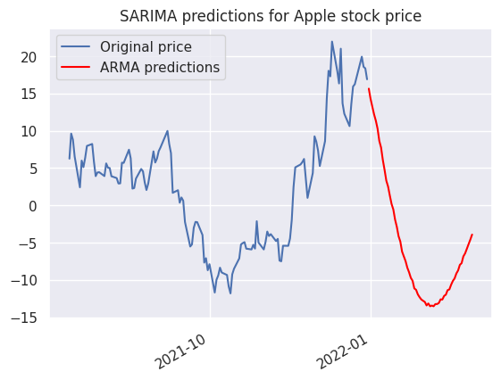
Train test split#
1train_test_split_date = pd.Timestamp("2021-10-01")
2train, test = (
3 price[price.index <= train_test_split_date],
4 price[price.index > train_test_split_date],
5)
1model = SARIMAX(train, order=arima_parameters, seasonal_order=seasonal_order)
2result = model.fit()
/home/runner/.cache/pypoetry/virtualenvs/stock-analysis-DF-fhKMw-py3.10/lib/python3.10/site-packages/statsmodels/tsa/base/tsa_model.py:473: ValueWarning: A date index has been provided, but it has no associated frequency information and so will be ignored when e.g. forecasting.
self._init_dates(dates, freq)
/home/runner/.cache/pypoetry/virtualenvs/stock-analysis-DF-fhKMw-py3.10/lib/python3.10/site-packages/statsmodels/tsa/base/tsa_model.py:473: ValueWarning: A date index has been provided, but it has no associated frequency information and so will be ignored when e.g. forecasting.
self._init_dates(dates, freq)
This problem is unconstrained.
RUNNING THE L-BFGS-B CODE
* * *
Machine precision = 2.220D-16
N = 21 M = 10
At X0 0 variables are exactly at the bounds
At iterate 0 f= 2.08236D+00 |proj g|= 2.78026D+00
At iterate 5 f= 2.06322D+00 |proj g|= 1.87002D-01
At iterate 10 f= 2.05780D+00 |proj g|= 1.38443D-01
At iterate 15 f= 2.05447D+00 |proj g|= 1.85209D-01
At iterate 20 f= 2.05395D+00 |proj g|= 5.90870D-02
At iterate 25 f= 2.05044D+00 |proj g|= 1.18707D-01
At iterate 30 f= 2.04875D+00 |proj g|= 6.01596D-02
At iterate 35 f= 2.04800D+00 |proj g|= 3.00315D-02
At iterate 40 f= 2.04743D+00 |proj g|= 6.00667D-02
At iterate 45 f= 2.04602D+00 |proj g|= 3.24028D-02
At iterate 50 f= 2.04558D+00 |proj g|= 1.63582D-02
* * *
Tit = total number of iterations
Tnf = total number of function evaluations
Tnint = total number of segments explored during Cauchy searches
Skip = number of BFGS updates skipped
Nact = number of active bounds at final generalized Cauchy point
Projg = norm of the final projected gradient
F = final function value
* * *
N Tit Tnf Tnint Skip Nact Projg F
21 50 55 1 0 0 1.636D-02 2.046D+00
F = 2.0455840523131141
STOP: TOTAL NO. of ITERATIONS REACHED LIMIT
/home/runner/.cache/pypoetry/virtualenvs/stock-analysis-DF-fhKMw-py3.10/lib/python3.10/site-packages/statsmodels/base/model.py:607: ConvergenceWarning: Maximum Likelihood optimization failed to converge. Check mle_retvals
warnings.warn("Maximum Likelihood optimization failed to "
1forecast_steps = len(test)
2forecast = result.get_forecast(steps=forecast_steps)
3predicted_values = forecast.predicted_mean
/home/runner/.cache/pypoetry/virtualenvs/stock-analysis-DF-fhKMw-py3.10/lib/python3.10/site-packages/statsmodels/tsa/base/tsa_model.py:836: ValueWarning: No supported index is available. Prediction results will be given with an integer index beginning at `start`.
return get_prediction_index(
/home/runner/.cache/pypoetry/virtualenvs/stock-analysis-DF-fhKMw-py3.10/lib/python3.10/site-packages/statsmodels/tsa/base/tsa_model.py:836: FutureWarning: No supported index is available. In the next version, calling this method in a model without a supported index will result in an exception.
return get_prediction_index(
1plot_n_days_prior_pred = 2 * forecast_steps
2
3plt.plot(train[-plot_n_days_prior_pred:], label="Original training price")
4plt.plot(test, label="Original test price")
5plt.plot(test.index, predicted_values, label="SARIMA predictions", color="red")
6plt.title("SARIMA predictions for Apple stock price")
7plt.legend()
8
9
10# Display limited number of date index
11plt.gca().xaxis.set_major_locator(mdates.MonthLocator(interval=3))
12# Rotate x-axis labels
13plt.gcf().autofmt_xdate()
14
15plt.show()
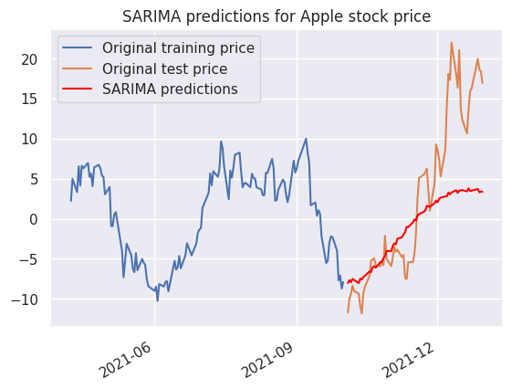
Prédiction du prix d’Apple à 2 mois#
Recomposons les prédictions du modèle SARIMA pour la stochasticité avec la tendance pour obtenir une prévision du cours d’Apple.
1# Import original stock price time series
2data_folder = "data/raw_data"
3original_data = pd.read_csv(
4 f"{data_folder}/{stock_name}.csv", parse_dates=["Date"], index_col="Date"
5)
1# Get only close price
2original_data = original_data["Close"]
1# Train test split
2original_data_train, original_data_test = (
3 original_data[price.index <= train_test_split_date],
4 original_data[price.index > train_test_split_date],
5)
1# Drop time index in order to vanish weekend days issues
2original_data_train.reset_index(drop=True, inplace=True)
3original_data_test.reset_index(drop=True, inplace=True)
Tendance#
On reconstruit la tendance que l’on avait prédite par la méthode de la moyenne mobile.
1for i in range(forecast_steps):
2 rolling_mean = original_data_train.rolling(window=100, center=False).mean()
3 pred_trend = rolling_mean.iloc[-1]
4 pred_index = original_data_train.index[-1] + 1
5 original_data_train = pd.concat(
6 [original_data_train, pd.Series([pred_trend], index=[pred_index])]
7 )
1plt.plot(
2 original_data_train.iloc[-300:-forecast_steps], color="blue", label="Original price"
3)
4plt.plot(
5 original_data_train.iloc[-forecast_steps:],
6 color="red",
7 label="Predicted trend price",
8)
9plt.legend()
<matplotlib.legend.Legend at 0x7fcae9bd1900>
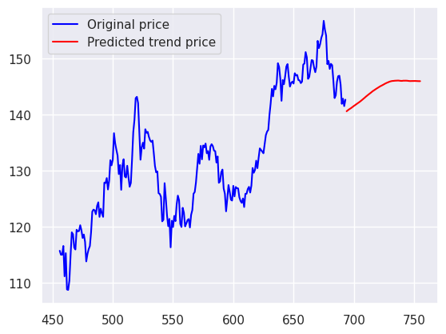
Saisonnalité et stochasticité#
1# Make SARIMA predicted values begin at zero
2predicted_values -= predicted_values.iloc[0]
1# Calculate trend + ARIMA
2add_components = original_data_train.iloc[-forecast_steps] + predicted_values
3
4# Put predicted data in train series set
5original_data_train.iloc[-forecast_steps:] = add_components
Evaluation de la prédiction#
1# Set index for test data i.e. actual data
2original_data_test.index = original_data_train.index[-forecast_steps:]
1plt.plot(
2 original_data_train.iloc[-200:-forecast_steps], color="blue", label="Original price"
3)
4plt.plot(
5 original_data_train.iloc[-forecast_steps:],
6 color="red",
7 label="Predicted price with trend + seasonality + stochasticity",
8)
9plt.plot(original_data_test, color="green", label="Actual price")
10plt.legend()
<matplotlib.legend.Legend at 0x7fcae9a7b910>
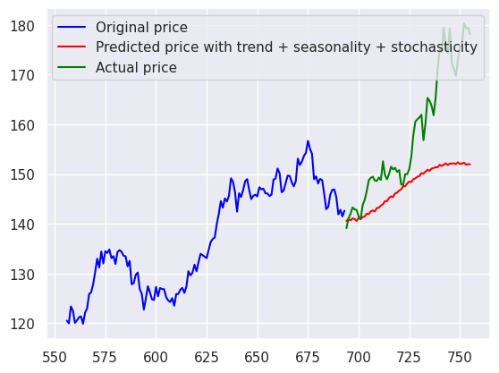
1y_true = original_data_test
2y_pred = original_data_train[-forecast_steps:]
1mae = mean_absolute_error(y_true=y_true, y_pred=y_pred)
2rmse = mean_squared_error(y_true=y_true, y_pred=y_pred, squared=False)
1print(f"{mae = }")
2print(f"{rmse = }")
3
4
5prediction_results_dict["SARIMA"] = [rmse, mae]
mae = 10.698679992853735
rmse = 13.862872951424345
XGBoost#
Traitement des données#
1# relecture des données (sans detrend)
2data_folder = "data/raw_data"
3stock_name = "AAPL"
4df = pd.read_csv(
5 f"{data_folder}/{stock_name}.csv", parse_dates=["Date"], index_col="Date"
6)
7print(f"{df.shape = }")
df.shape = (756, 6)
1train_start_date = "2019"
2train_end_date = "2021-10-01"
3df_train = df.loc[train_start_date:train_end_date].copy()
4df_test = df.loc[train_end_date:].copy()
1df_train["time_dummy"] = range(len(df_train))
2df_test["time_dummy"] = range(len(df_test))
3df_test["time_dummy"] += len(df_train)
4df_train["day"] = df_train.index.day
5df_test["day"] = df_test.index.day
1df_train["time_dummy"].tail()
Date
2021-09-27 689
2021-09-28 690
2021-09-29 691
2021-09-30 692
2021-10-01 693
Name: time_dummy, dtype: int64
1df_test["time_dummy"].head()
Date
2021-10-01 694
2021-10-04 695
2021-10-05 696
2021-10-06 697
2021-10-07 698
Name: time_dummy, dtype: int64
1x_col = ["time_dummy", "day"]
2y_col = ["Close"]
1x = df_train[x_col]
2y = df_train[y_col]
1x_test = df_test[x_col]
2y_test = df_test[y_col]
Apprentissage des modèles#
1lr = LinearRegression()
1xgb = xgboost.XGBRegressor(random_state=0, n_jobs=-2, colsample_bytree=0.3, max_depth=3)
1lr.fit(x, y)
LinearRegression()In a Jupyter environment, please rerun this cell to show the HTML representation or trust the notebook.
On GitHub, the HTML representation is unable to render, please try loading this page with nbviewer.org.
LinearRegression()
1y_residuals = y - lr.predict(x)
2xgb.fit(x, y_residuals)
XGBRegressor(base_score=None, booster=None, callbacks=None,
colsample_bylevel=None, colsample_bynode=None,
colsample_bytree=0.3, device=None, early_stopping_rounds=None,
enable_categorical=False, eval_metric=None, feature_types=None,
gamma=None, grow_policy=None, importance_type=None,
interaction_constraints=None, learning_rate=None, max_bin=None,
max_cat_threshold=None, max_cat_to_onehot=None,
max_delta_step=None, max_depth=3, max_leaves=None,
min_child_weight=None, missing=nan, monotone_constraints=None,
multi_strategy=None, n_estimators=None, n_jobs=-2,
num_parallel_tree=None, random_state=0, ...)In a Jupyter environment, please rerun this cell to show the HTML representation or trust the notebook. On GitHub, the HTML representation is unable to render, please try loading this page with nbviewer.org.
XGBRegressor(base_score=None, booster=None, callbacks=None,
colsample_bylevel=None, colsample_bynode=None,
colsample_bytree=0.3, device=None, early_stopping_rounds=None,
enable_categorical=False, eval_metric=None, feature_types=None,
gamma=None, grow_policy=None, importance_type=None,
interaction_constraints=None, learning_rate=None, max_bin=None,
max_cat_threshold=None, max_cat_to_onehot=None,
max_delta_step=None, max_depth=3, max_leaves=None,
min_child_weight=None, missing=nan, monotone_constraints=None,
multi_strategy=None, n_estimators=None, n_jobs=-2,
num_parallel_tree=None, random_state=0, ...)1def xgb_prediction(xgb: xgboost.XGBRegressor, lr: LinearRegression, x):
2 lr_predict = lr.predict(x).reshape(-1, 1)
3 y_pred = xgb.predict(x).reshape(-1, 1)
4
5 return y_pred + lr_predict
1plt.title("Prédiction XGBoost sur le train set")
2plt.plot(xgb_prediction(xgb, lr, x))
[<matplotlib.lines.Line2D at 0x7fcae99a48e0>]
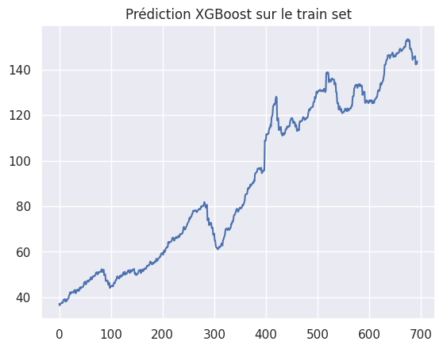
1plt.title("Prédiction XGBoost sur le test set")
2y_pred = xgb_prediction(xgb, lr, x_test)
3plt.plot(y_pred)
[<matplotlib.lines.Line2D at 0x7fcae9b13910>]
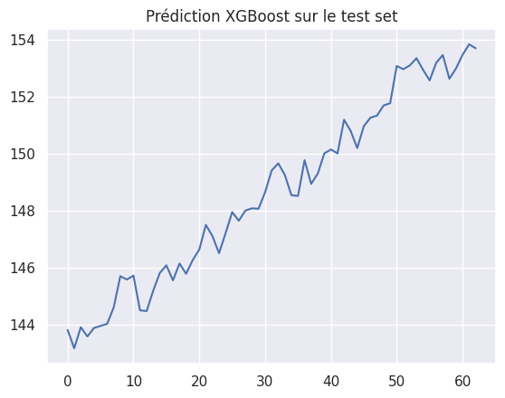
1y_pred = pd.DataFrame(y_pred)
2y_pred.index = df_test.index
1plt.title("Prédiction XGBoost (time dummy + saisonnalité mensuelle)")
2plt.plot(df_train[["Close"]])
3plt.plot(df_test[["Close"]], label="Original")
4plt.plot(y_pred, label="Régression linéaire + XGBoost")
5plt.legend()
6_ = plt.xticks(rotation=45, ha="right")
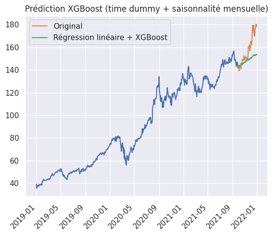
1rmse = mean_squared_error(y_test, y_pred, squared=False)
2mae = mean_absolute_error(y_test, y_pred)
3
4
5print(f"RMSE: {rmse}")
6print(f"MAE: {mae}")
7
8prediction_results_dict["XGBoost"] = [rmse, mae]
RMSE: 13.252235166510234
MAE: 9.821550637003275
Extra Trees#
Apprentissage des modèles#
1lr = LinearRegression()
1et = ExtraTreesRegressor(random_state=0, n_jobs=-2)
1lr.fit(x, y)
LinearRegression()In a Jupyter environment, please rerun this cell to show the HTML representation or trust the notebook.
On GitHub, the HTML representation is unable to render, please try loading this page with nbviewer.org.
LinearRegression()
1y_residuals = y - lr.predict(x)
2et.fit(x, y_residuals)
/home/runner/.cache/pypoetry/virtualenvs/stock-analysis-DF-fhKMw-py3.10/lib/python3.10/site-packages/sklearn/base.py:1152: DataConversionWarning: A column-vector y was passed when a 1d array was expected. Please change the shape of y to (n_samples,), for example using ravel().
return fit_method(estimator, *args, **kwargs)
ExtraTreesRegressor(n_jobs=-2, random_state=0)In a Jupyter environment, please rerun this cell to show the HTML representation or trust the notebook.
On GitHub, the HTML representation is unable to render, please try loading this page with nbviewer.org.
ExtraTreesRegressor(n_jobs=-2, random_state=0)
1def et_prediction(et: ExtraTreesRegressor, lr: LinearRegression, x):
2 lr_predict = lr.predict(x).reshape(-1, 1)
3 y_pred = et.predict(x).reshape(-1, 1)
4
5 return y_pred + lr_predict
1y_pred = et_prediction(et, lr, x_test)
2y_pred = pd.DataFrame(y_pred)
3y_pred.index = df_test.index
1plt.title("Prédiction ExtraTrees (time dummy + saisonnalité mensuelle)")
2plt.plot(df_train[["Close"]])
3plt.plot(df_test[["Close"]], label="Original")
4plt.plot(y_pred, label="Régression linéaire + ExtraTrees")
5plt.legend()
6_ = plt.xticks(rotation=45, ha="right")
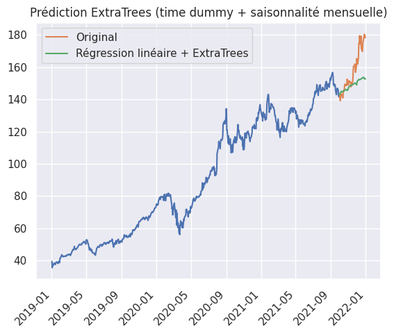
1rmse = mean_squared_error(y_test, y_pred, squared=False)
2mae = mean_absolute_error(y_test, y_pred)
3
4
5print(f"RMSE: {rmse}")
6print(f"MAE: {mae}")
7
8prediction_results_dict["ExtraTrees"] = [rmse, mae]
RMSE: 13.201822820070818
MAE: 9.74557499696818
SVM#
Apprentissage des modèles#
1lr = LinearRegression()
1svr = SVR()
1lr.fit(x, y)
LinearRegression()In a Jupyter environment, please rerun this cell to show the HTML representation or trust the notebook.
On GitHub, the HTML representation is unable to render, please try loading this page with nbviewer.org.
LinearRegression()
1y_residuals = y - lr.predict(x)
2svr.fit(x, y_residuals)
/home/runner/.cache/pypoetry/virtualenvs/stock-analysis-DF-fhKMw-py3.10/lib/python3.10/site-packages/sklearn/utils/validation.py:1183: DataConversionWarning: A column-vector y was passed when a 1d array was expected. Please change the shape of y to (n_samples, ), for example using ravel().
y = column_or_1d(y, warn=True)
SVR()In a Jupyter environment, please rerun this cell to show the HTML representation or trust the notebook.
On GitHub, the HTML representation is unable to render, please try loading this page with nbviewer.org.
SVR()
1def svr_prediction(svr: SVR, lr: LinearRegression, x):
2 lr_predict = lr.predict(x).reshape(-1, 1)
3 y_pred = svr.predict(x).reshape(-1, 1)
4
5 return y_pred + lr_predict
1y_pred = svr_prediction(svr, lr, x_test)
2y_pred = pd.DataFrame(y_pred)
3y_pred.index = df_test.index
1plt.title("Prédiction Support Vector (time dummy + saisonnalité mensuelle)")
2plt.plot(df_train[["Close"]])
3plt.plot(df_test[["Close"]], label="Original")
4plt.plot(y_pred, label="Régression linéaire + Support Vector")
5plt.legend()
6_ = plt.xticks(rotation=45, ha="right")
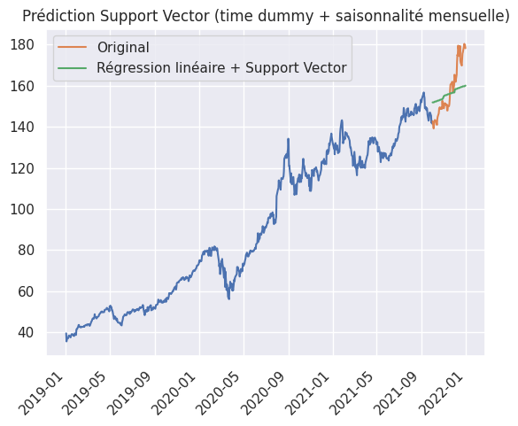
1rmse = mean_squared_error(y_test, y_pred, squared=False)
2mae = mean_absolute_error(y_test, y_pred)
3
4
5print(f"RMSE: {rmse}")
6print(f"MAE: {mae}")
7
8prediction_results_dict["Support Vector Machine"] = [rmse, mae]
RMSE: 10.297525832287155
MAE: 8.73950426028892
Prophet#
Pré-traitement pour Prophet#
1# relecture des données (sans detrend)
2data_folder = "data/raw_data"
3stock_name = "AAPL"
4df = pd.read_csv(
5 f"{data_folder}/{stock_name}.csv", parse_dates=["Date"], index_col="Date"
6)
7print(f"{df.shape = }")
df.shape = (756, 6)
1df_train = df.loc[train_start_date:train_end_date]
1df_train.shape
(694, 6)
1x = df_train[[]].copy()
1x["ds"] = df_train.index
2x["y"] = df_train[["Close"]]
1x.head()
| ds | y | |
|---|---|---|
| Date | ||
| 2019-01-02 | 2019-01-02 | 39.480000 |
| 2019-01-03 | 2019-01-03 | 35.547501 |
| 2019-01-04 | 2019-01-04 | 37.064999 |
| 2019-01-07 | 2019-01-07 | 36.982498 |
| 2019-01-08 | 2019-01-08 | 37.687500 |
Prédiction#
Calcul de la prédiction#
1model = Prophet()
2model.fit(x)
09:25:35 - cmdstanpy - INFO - Chain [1] start processing
09:25:35 - cmdstanpy - INFO - Chain [1] done processing
<prophet.forecaster.Prophet at 0x7fcae9b30520>
1future = x_test.copy()
2future["ds"] = x_test.index
1forecast = model.predict(future)
2forecast[["ds", "yhat", "yhat_lower", "yhat_upper"]].tail()
| ds | yhat | yhat_lower | yhat_upper | |
|---|---|---|---|---|
| 58 | 2021-12-23 | 163.485849 | 157.429297 | 169.888856 |
| 59 | 2021-12-27 | 164.851525 | 158.423615 | 171.336812 |
| 60 | 2021-12-28 | 165.169482 | 158.395403 | 171.728886 |
| 61 | 2021-12-29 | 165.506546 | 159.233661 | 171.649162 |
| 62 | 2021-12-30 | 165.524170 | 159.169593 | 172.744326 |
Affichage de la prédiction#
1fig, ax1 = plt.subplots(figsize=(10, 10))
2fig1 = model.plot(forecast, ax=ax1)
3df[["Close"]].loc[train_end_date:].plot(ax=ax1, color="orange")
4plt.legend()
/home/runner/.cache/pypoetry/virtualenvs/stock-analysis-DF-fhKMw-py3.10/lib/python3.10/site-packages/prophet/plot.py:72: FutureWarning: The behavior of DatetimeProperties.to_pydatetime is deprecated, in a future version this will return a Series containing python datetime objects instead of an ndarray. To retain the old behavior, call `np.array` on the result
fcst_t = fcst['ds'].dt.to_pydatetime()
/home/runner/.cache/pypoetry/virtualenvs/stock-analysis-DF-fhKMw-py3.10/lib/python3.10/site-packages/prophet/plot.py:73: FutureWarning: The behavior of DatetimeProperties.to_pydatetime is deprecated, in a future version this will return a Series containing python datetime objects instead of an ndarray. To retain the old behavior, call `np.array` on the result
ax.plot(m.history['ds'].dt.to_pydatetime(), m.history['y'], 'k.',
<matplotlib.legend.Legend at 0x7fcae666e860>

Décomposition#
1fig2 = model.plot_components(forecast)
/home/runner/.cache/pypoetry/virtualenvs/stock-analysis-DF-fhKMw-py3.10/lib/python3.10/site-packages/prophet/plot.py:228: FutureWarning: The behavior of DatetimeProperties.to_pydatetime is deprecated, in a future version this will return a Series containing python datetime objects instead of an ndarray. To retain the old behavior, call `np.array` on the result
fcst_t = fcst['ds'].dt.to_pydatetime()
/home/runner/.cache/pypoetry/virtualenvs/stock-analysis-DF-fhKMw-py3.10/lib/python3.10/site-packages/prophet/plot.py:351: FutureWarning: The behavior of DatetimeProperties.to_pydatetime is deprecated, in a future version this will return a Series containing python datetime objects instead of an ndarray. To retain the old behavior, call `np.array` on the result
df_y['ds'].dt.to_pydatetime(), seas[name], ls='-', c='#0072B2')
/home/runner/.cache/pypoetry/virtualenvs/stock-analysis-DF-fhKMw-py3.10/lib/python3.10/site-packages/prophet/plot.py:354: FutureWarning: The behavior of DatetimeProperties.to_pydatetime is deprecated, in a future version this will return a Series containing python datetime objects instead of an ndarray. To retain the old behavior, call `np.array` on the result
df_y['ds'].dt.to_pydatetime(), seas[name + '_lower'],
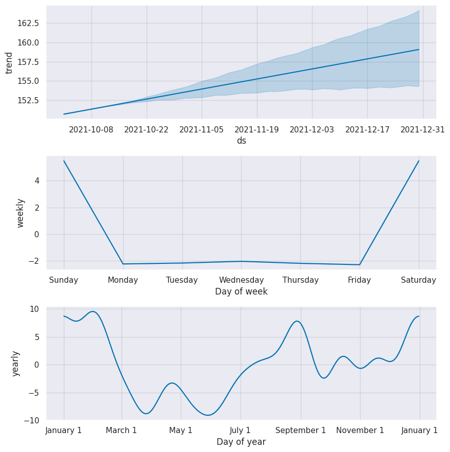
Métriques de prédiction#
1y_true = df[["Close"]].loc[train_end_date:]
2y_pred = forecast[["yhat"]].iloc[-y_true.shape[0] :]
1rmse = mean_squared_error(y_true, y_pred, squared=False)
2mae = mean_absolute_error(y_true, y_pred)
3mape = mean_absolute_percentage_error(y_true, y_pred)
4
5print(f"RMSE: {rmse}")
6print(f"MAE: {mae}")
RMSE: 9.228347960218333
MAE: 7.378329691676633
1prediction_results_dict["Prophet"] = [rmse, mae]
Comparaison des modèles#
1prediction_results_df = pd.DataFrame(prediction_results_dict).T
2prediction_results_df.columns = ["RMSE", "MAE"]
3# prediction_results_df
1prediction_results_df.plot(kind="bar")
2plt.title("Comparaison des modèles de prédiction")
3
4plt.xticks(rotation=45, ha="right")
(array([0, 1, 2, 3, 4]),
[Text(0, 0, 'SARIMA'),
Text(1, 0, 'XGBoost'),
Text(2, 0, 'ExtraTrees'),
Text(3, 0, 'Support Vector Machine'),
Text(4, 0, 'Prophet')])
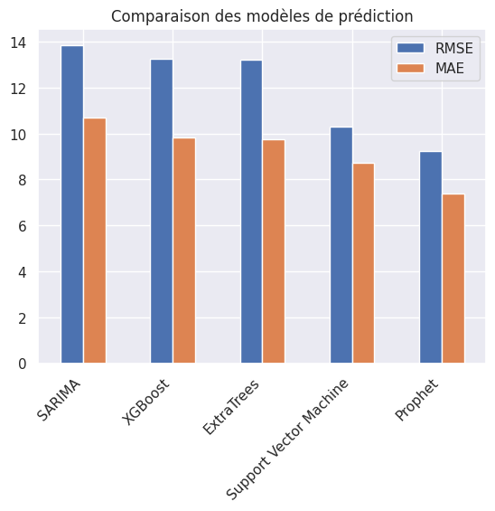
1# print(prediction_results_df.to_markdown())
Tableau. Comparaison des modèles de prédiction
RMSE |
MAE |
Graphiquement |
|
|---|---|---|---|
ARMA |
17.3524 |
14.9797 |
✅ |
SARIMA |
13.6817 |
11.6047 |
✅ |
XGBoost |
13.2914 |
9.85264 |
✅ |
ExtraTrees |
13.2018 |
9.74557 |
✅ |
Support Vector Machine |
10.2975 |
8.7395 |
❌ |
Prophet |
8.97155 |
7.26206 |
✅ |
Meilleur modèle : Prophet